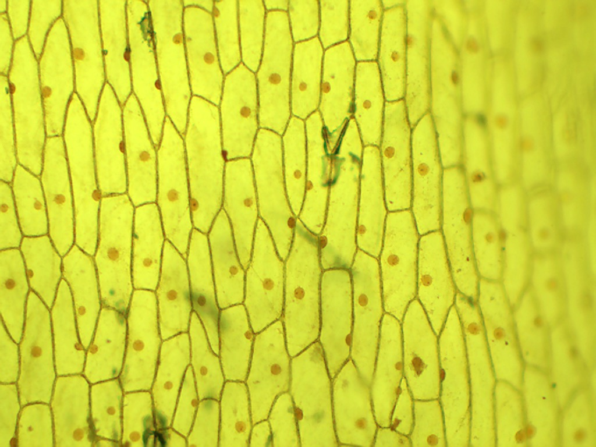

المملكة العربية السعودية — وزارة التعليم
كتاب العلوم — الجزء الأول من المقرر — طبعة ١٤٤٧ / ٢٠٢٥
الخَلايا
الصف الرابع الابتدائي
إعداد: نايف المطيري
موقع الدرس
أينَ نحنُ في الكتابِ؟ صفحات ٢٦ – ٣٥
الوحدة الأولى المخلوقات الحية
الفصل الأول ممالك المخلوقات الحية
الدرس الأول الخلاياصفحات ٢٦ – ٣٥
السؤالُ الأساسيُّ: كيفَ تُنظَّمُ المخلوقاتُ الحيةُ؟ (ص ٢٨)
الأهداف
أهدافُ التعلُّمِ مستخلصة من ص ٢٦ – ٣٥
في نهايةِ الدرسِ أكونُ قادرًا على أنْ:
أُعرِّفَ الخليةَ، وأذكرَ الوظائفَ الخمسَ للمخلوقاتِ الحيةِ. أُميِّزَ بينَ الصفاتِ الوراثيةِ والصفاتِ المكتسبةِ. أُقارنَ بينَ الخلايا النباتيةِ والخلايا الحيوانيةِ. أُسمِّيَ أجزاءَ الخليةِ ووظيفةَ كلِّ جزءٍ. أُرتِّبَ مستوياتِ التنظيمِ: خلايا ← نسيج ← عضو ← جهاز. التهيئة
أنظرُ وأتساءَلُ ص ٢٦ — سؤال الكتاب
ماذا أرى في الصورةِ؟ هلْ سبقَ أنْ شاهدتُهُ منْ قبلُ؟ كلُّ واحدٍ منْ هذهِ الصناديقِ صغيرٌ جدًّا، ولا أستطيعُ رؤيتَهُ إلا بالمجهرِ.
معرفة سابقة
ماذا أعرفُ منْ قبلُ؟ تمهيد تربوي
المخلوقُ الحيُّ ينمو ويستجيبُ ويتكاثرُ
الخلايا وحداتٌ بنائيةٌ تُكوِّنُ أجسامَ المخلوقاتِ
المجهرُ أداةٌ تجعلُ الأشياءَ الصغيرةَ تبدو كبيرةً
اليومَ كيفَ تنتظمُ الخلايا؟
توضيح إضافي: درسْنا الخلايا في الصفِّ الثالثِ، واليومَ نتعرَّفُ أجزاءَها ومستوياتِ تنظيمِها.
المفردات
المفرداتُ العلميةُ (١) ص ٢٨ — مفردات الكتاب
الخليةُ أصغرُ وحدةٍ في بناءِ المخلوقاتِ الحيةِ.
الأكسجينُ غازٌ موجودٌ في الهواءِ وفي الماءِ، تحتاجُ إليهِ المخلوقاتُ الحيةُ.
الوراثةُ انتقالُ الصفاتِ الوراثيةِ منَ الآباءِ إلى الأبناءِ.
الصفاتُ الوراثيةُ الصفاتُ التي تنتقلُ منَ الآباءِ إلى الأبناءِ، ويتحكَّمُ في ظهورِها جينٌ واحدٌ أو أكثرُ.
المفردات
المفرداتُ العلميةُ (٢) ص ٢٨ — مفردات الكتاب
الجينُ المادةُ المسؤولةُ عنْ نقلِ الصفاتِ الوراثيةِ منَ الآباءِ إلى الأبناءِ.
الصفاتُ المكتسبةُ أيُّ سلوكٍ أو مهارةٍ يكتسبُها الإنسانُ أو الحيوانُ بالتعلُّمِ والتدريبِ والممارسةِ.
النسيجُ مجموعةٌ منَ الخلايا المتماثلةِ تجتمعُ وتتعاونُ معًا لتؤدِّيَ وظيفةً محدَّدةً.
العضوُ تجتمعُ الأنسجةُ معًا لتكوِّنَ عضوًا يقومُ بوظيفةٍ محدَّدةٍ.
الجهازُ الحيويُّ تعملُ الأعضاءُ وتتآزرُ معًا لتكوِّنَ جهازًا يقومُ بوظائفَ محدَّدةٍ منْ وظائفِ الحياةِ.
مهارة القراءة
المقارنةُ ص ٢٨ — مهارة القراءة في الكتاب
أُحدِّدُ أوجهَ الشبهِ في الوسطِ، وأوجهَ الاختلافِ على الجانبينِ.
الفكرة الرئيسة
السؤالُ الأساسيُّ ص ٢٨
كيفَ تُنظَّمُ المخلوقاتُ الحيةُ؟
الشرح
ما المخلوقاتُ الحيةُ؟ ص ٢٨ — نص الكتاب
النباتاتُ والحيواناتُ مخلوقاتٌ حيةٌ، خلقَها اللهُ تعالى منْ خلايا. فجسمي يتكوَّنُ منْ خلايا، وكذلكَ أجسامُ النملِ ونباتُ البصلِ.
الخليةُ أصغرُ وحدةٍ في بناءِ المخلوقاتِ الحيةِ.
الشرح
المخلوقاتُ الحيةُ لها حاجاتٌ ص ٢٨ — نص الكتاب
قدْ يتكوَّنُ المخلوقُ الحيُّ منْ ملايينِ الخلايا ، أوْ منْ خليةٍ واحدةٍ ، وفي كلِّ حالةٍ تحتاجُ جميعُ المخلوقاتِ الحيةِ إلى:
الماءِ
الغذاءِ
مكانٍ لتعيشَ فيهِ كما أنَّها تحتاجُ إلى الأكسجينِ وهوَ غازٌ موجودٌ في الهواءِ وفي الماءِ.
الشرح
المخلوقاتُ الحيةُ تتكاثرُ ص ٢٨ — نص الكتاب
يقومُ المخلوقُ الحيُّ بخمسِ وظائفَ أساسيةٍ للحياةِ ، منها التكاثرُ ، وهوَ إنتاجُ مخلوقاتٍ حيةٍ جديدةٍ منَ النوعِ نفسِهِ، ويقومُ بهِ أبٌ واحدٌ أو يشتركُ فيهِ أبوانِ معًا.
وكلمةُ النسلِ تعني الأفرادَ الجديدةَ التي تنتجُ عنْ تكاثرِ المخلوقاتِ الحيةِ.
الشرح
الوراثةُ والصفاتُ الوراثيةُ ص ٢٨ — نص الكتاب
ويحملُ النسلُ الجديدُ صفاتٍ تنتقلُ بالوراثةِ التي تعني انتقالَ الصفاتِ الوراثيةِ منَ الآباءِ إلى الأبناءِ:
كلونِ الجلدِ ولونِ الشعرِ ونوعِهِ، وألوانِ أو شكلِ العيونِ وشكلِ الأنفِ وملامحِ الوجهِ وحتى الغمَّازاتِ عندَ الإنسانِ، وعددِ البتلاتِ ولونِ البتلاتِ عندَ النباتِ.
الصفاتُ الوراثيةُ هيَ الصفاتُ التي تنتقلُ منَ الآباءِ إلى الأبناءِ ويتحكَّمُ في ظهورِها جينٌ واحدٌ أو أكثرُ، وهوَ المادةُ المسؤولةُ عنْ نقلِ الصفاتِ الوراثيةِ.
الشرح
صفاتٌ جديدةٌ قابلةٌ للتوارثِ ص ٢٩ — نص الكتاب
كما أنَّ الأبناءَ في بعضِ أنواعِ الكائناتِ الحيةِ قدْ يحملونَ صفاتٍ جديدةً قابلةً للتوارثِ لا يأخذونَها منْ آبائِهم تجعلُهم يتكيفونَ بشكلٍ أفضلَ معَ تغيُّراتِ البيئةِ،
مثلَ قدرةِ بعضِ الحشراتِ على البقاءِ حيةً بشكلٍ طبيعيٍّ بعدَ المعاملةِ بجرعةٍ عاليةٍ منَ المبيداتِ. (ص ٢٩)
الشرح
الصفاتُ المكتسبةُ ص ٢٩ — نص الكتاب
أمَّا الأمثلةُ الآتيةُ فجميعُها أمثلةٌ على الصفاتِ غيرِ الموروثةِ (المكتسبةِ) :
إجادةُ السباحةِ، والرسمِ، ومهارةُ كرةِ القدمِ عندَ الإنسانِ. وترويضُ الأسودِ منْ قِبَلِ الإنسانِ في عروضِ السيركِ. وتجمُّعُ طيورِ البطريقِ في مجموعاتٍ كبيرةٍ ومتلاصقةٍ للحفاظِ على درجةِ حرارةِ أجسامِها في المناطقِ شديدةِ البرودةِ. والأغصانُ المكسورةُ عندَ النباتِ. وهيَ: أيُّ سلوكٍ أو مهارةٍ يكتسبُها الإنسانُ أو الحيوانُ بالتعلُّمِ والتدريبِ والممارسةِ خلالَ مراحلِ الحياةِ .
محاكاة
صفةٌ وراثيةٌ أمْ مكتسبةٌ؟ تدريب تفاعلي على نص ص ٢٨ – ٢٩
١ منْ ٦ الإجاباتُ الصحيحةُ: ٠
صفةٌ وراثيةٌ
صفةٌ مكتسبةٌ
أختارُ، ثمَّ أعرفُ السببَ.
الشرح
وظائفُ أخرى ص ٢٩ — نص الكتاب
عندَما تنمو السحليةُ وتكبرُ ينسلخُ عنها جلدُها، ولكنْ ليسَ كلُّ الحيواناتِ يحدثُ لها ذلكَ، رغمَ أنَّ جميعَها تنمو وتكبرُ . ولكيْ تقومَ بذلكَ فإنَّها تحتاجُ إلى الطاقةِ.
تحصلُ المخلوقاتُ الحيةُ على الطاقةِ منَ الغذاءِ الذي تأكلُهُ؛ فالماعزُ يتغذَّى على الحشائشِ. وبعضُ المخلوقاتِ الحيةِ ومنها النباتاتُ تصنعُ غذاءَها بنفسِها .
وبعدَ أنْ يتناولَ المخلوقُ الحيُّ غذاءَهُ لا بدَّ أنْ يتخلَّصَ منَ الفضلاتِ . ويمكنُ تعرُّفُ الغذاءِ الذي يتناولُهُ منَ الفضلاتِ التي يطرحُها. (ص ٢٩ – ٣٠)
الشرح
الاستجابةُ للتغيراتِ ص ٣٠ — نص الكتاب
ومنَ الوظائفِ التي تُميِّزُ المخلوقاتِ الحيةَ أنَّها تستجيبُ لتغيُّراتِ البيئةِ منْ حولِها.
تُرى، لماذا تأخذُ جميعُ نباتاتِ تبَّاعِ الشمسِ في الصورةِ الاتجاهَ نفسَهُ؟ نباتُ تبَّاعِ الشمسِ مثلُهُ مثلُ سائرِ النباتاتِ، ينمو في اتجاهِ الضوءِ.
ويُسمَّى نموُّ النباتاتِ في اتجاهِ ضوءِ الشمسِ الانتحاءَ الضوئيَّ .
محاكاة
أيُّها مخلوقٌ حيٌّ؟ محاكاة لجدول ص ٢٩
السحليةُ
الصخرُ
السيارةُ
وظيفةُ الحياةِ
السحليةُ هلْ تنمو؟ هلْ تحتاجُ إلى الغذاءِ؟ هلْ تُخرجُ فضلاتٍ؟ هلْ تتكاثرُ؟ هلْ تستجيبُ لتغيراتِ البيئةِ؟
سؤال من الكتاب
أقرأُ الجدولَ ص ٢٩
هلِ السيارةُ مخلوقٌ حيٌّ؟
إرشادُ الكتابِ: أبحثُ هلْ تقومُ السيارةُ بالوظائفِ الخمسِ التي تقومُ بها المخلوقاتُ الحيةُ؟
إظهار الإجابة إجابة نموذجية مقترحة لا، السيارةُ ليستْ مخلوقًا حيًّا. لا تنمو ، وَلا تتكاثرُ ، وَلا تستجيبُ لتغيراتِ البيئةِ .لا تقومُ بالوظائفِ الخمسِ التي تقومُ بها المخلوقاتُ الحيةُ. (ص ٢٩)
أختبر نفسي
أختبرُ نفسي ص ٢٩
أقارنُ. كيفَ تختلفُ النباتاتُ عنِ الحاسوبِ؟
إظهار الإجابة إجابة نموذجية مقترحة النباتاتُ مخلوقاتٌ حيةٌ ؛ فهيَ مكوَّنةٌ منْ خلايا ، وتقومُ بالوظائفِ الخمسِ : تنمو، وتحتاجُ إلى الغذاءِ وتصنعُهُ بنفسِها، وتتخلَّصُ منَ الفضلاتِ، وتتكاثرُ وتنقلُ صفاتِها بالوراثةِ، وتستجيبُ للبيئةِ (الانتحاءُ الضوئيُّ).أمَّا الحاسوبُ فشيءٌ غيرُ حيٍّ صنعَهُ الإنسانُ؛ لا يتكوَّنُ منْ خلايا، ولا ينمو، ولا يتكاثرُ، ولا يستجيبُ منْ تلقاءِ نفسِهِ.
التفكيرُ الناقدُ. هلْ مهارةُ ركوبِ الخيلِ صفةٌ موروثةٌ أمْ صفةٌ مكتسبةٌ؟ وضِّحْ إجابتَكَ.
إظهار الإجابة إجابة نموذجية مقترحة هيَ صفةٌ مكتسبةٌ .التوضيحُ: الصفاتُ المكتسبةُ هيَ أيُّ سلوكٍ أو مهارةٍ يكتسبُها الإنسانُ أو الحيوانُ بالتعلُّمِ والتدريبِ والممارسةِ . وركوبُ الخيلِ لا ينتقلُ بالجيناتِ منَ الآباءِ إلى الأبناءِ، وإنَّما يتعلَّمُهُ الإنسانُ بالتدريبِ — مثلُهُ مثلُ السباحةِ والرسمِ ومهارةِ كرةِ القدمِ. (ص ٢٩)
الشرح
فيمَ تتشابهُ الخلايا وفيمَ تختلفُ؟ ص ٣٠ — نص الكتاب
جميعُ الخلايا لها أجزاءٌ صغيرةٌ تساعدُها على البقاءِ حيةً. لكنَّ هذهِ الأجزاءَ تختلفُ منْ خليةٍ إلى أخرى.
فالخلايا النباتيةُ لها أجزاءٌ لا يوجدُ مثلُها في الخلايا الحيوانيةِ .
الشرح
الخلايا النباتيةُ فيها كلوروفيل ص ٣٠ — نص الكتاب
تحتوي معظمُ الخلايا النباتيةِ على أجزاءَ خضراءَ تسمَّى البلاستيداتِ الخضراءَ ، وهيَ مملوءةٌ بمادةٍ خضراءَ تسمَّى الكلوروفيلَ ، تساعدُ النباتَ على صنعِ غذائِهِ باستخدامِ ضوءِ الشمسِ.
أمَّا الخليةُ الحيوانيةُ فلا تحتوي على البلاستيداتِ أوِ الكلوروفيلِ .
الشرح
الخلايا النباتيةُ لها جدارٌ خلويٌّ ص ٣٠ — نص الكتاب
هناكَ جدارٌ صلبٌ يحيطُ بالخليةِ النباتيةِ يُسمَّى الجدارَ الخلويَّ ، يوجدُ بداخلِهِ الغشاءُ الخلويُّ ،
أمَّا الخلايا الحيوانيةُ فليسَ لها جدارٌ خلويٌّ؛ ولكنْ لها غشاءٌ خلويٌّ .
محاكاة
أجزاءُ الخليةِ النباتيةِ والحيوانيةِ محاكاة لشكل ص ٣٠ – ٣١
أضغطُ على الجزءِ:
خليةٌ نباتيةٌ
خليةٌ حيوانيةٌ
جدول الكتاب
أجزاءُ الخليةِ ص ٣١ — جدول الكتاب
الجزءُ خلايا حيوانيةٌ خلايا نباتيةٌ جدارُ الخليةِ ✖ ✔ غشاءُ الخليةِ ✔ ✔ البلاستيداتُ ✖ ✔ النواةُ ✔ ✔ الفجوةُ العصاريةُ صغيرةٌ كبيرةٌ السيتوبلازمُ ✔ ✔ الميتوكندريا ✔ ✔ الكروموسوماتُ ✔ ✔
سؤال من الكتاب
أقرأُ الجدولَ ص ٣١
فيمَ تتشابهُ الخلايا النباتيةُ معَ الخلايا الحيوانيةِ، وفيمَ تختلفُ؟
إرشادُ الكتابِ: أقرأُ أجزاءَ الخليةِ النباتيةِ، وأقارنُ بينَها وبينَ أجزاءِ الخليةِ الحيوانيةِ.
إظهار الإجابة الإجابة تتشابهانِ: كلتاهُما لها غشاءُ خليةٍ ، وَنواةٌ ، وَسيتوبلازمٌ ، وَميتوكندريا ، وَكروموسوماتٌ ، وَفجوةٌ عصاريةٌ .تختلفانِ: الخليةُ النباتيةُ لها جدارٌ خلويٌّ وَبلاستيداتٌ ، وليسَ في الخليةِ الحيوانيةِ مثلُهُما. كما أنَّ الفجوةَ العصاريةَ كبيرةٌ في الخليةِ النباتيةِ (فجوةٌ أو فجوتانِ)، أمَّا في الحيوانيةِ فَصغيرةٌ وعديدةٌ. (ص ٣١)
أختبر نفسي
أختبرُ نفسي ص ٣١
أقارنُ. فيمَ يختلفُ جدارُ الخليةِ عنْ غشاءِ الخليةِ؟
إظهار الإجابة إجابة نموذجية جدارُ الخليةِ: تركيبٌ صلبٌ يدعمُ ويحمي الخليةَ النباتيةَ، ويوجدُ في الخلايا النباتيةِ فقطْ ، وهوَ الطبقةُ الخارجيةُ.غشاءُ الخليةِ: غطاءٌ رقيقٌ جدًّا يحيطُ بالخليةِ، ويوجدُ في الخلايا النباتيةِ والحيوانيةِ معًا ، وفي الخليةِ النباتيةِ يقعُ داخلَ جدارِ الخليةِ . (ص ٣٠ – ٣١)
التفكيرُ الناقدُ. هلْ يمكنُ للخليةِ الحيوانيةِ أنْ تكونَ خضراءَ اللونِ؟ لماذا؟
إظهار الإجابة إجابة نموذجية مقترحة لا. لأنَّ اللونَ الأخضرَ يأتي منْ مادةِ الكلوروفيلِ الموجودةِ في البلاستيداتِ الخضراءِ ، وَالخليةُ الحيوانيةُ لا تحتوي على البلاستيداتِ أوِ الكلوروفيلِ . (ص ٣٠)لا تصنعُ غذاءَها بنفسِها .
الشرح
كيفَ تنتظمُ الخلايا؟ ص ٣٢ — نص الكتاب
تُرى! ما الذي يجعلُ قلبَ الإنسانِ مختلفًا عنْ جلدِهِ؟ هلِ الخلايا مختلفةٌ؟!
عندَما يكونُ المخلوقُ الحيُّ مكوَّنًا منْ خلايا عديدةٍ يكونُ للخلايا وظائفُ مختلفةٌ .
الشرح
أمثلةٌ على تنوُّعِ وظائفِ الخلايا ص ٣٢ — نص الكتاب
خلايا جذورِ النباتِ تمتصُّ الماءَ والأملاحَ المعدنيةَ، ولكنَّها لا تستطيعُ صنعَ الغذاءِ؛ لأنَّها لا تحتوي على الكلوروفيلِ. وهناكَ خلايا أخرى تحتوي على الكلوروفيلِ ، وتقومُ بصنعِ الغذاءِ في النباتِ. أمَّا في الحيواناتِ فتقومُ خلايا الدمِ الحمراءُ بنقلِ الأكسجينِ وموادَّ أخرى داخلَ أجسامِها. وهناكَ الخلايا العصبيةُ التي تنقلُ إشاراتٍ (معلوماتٍ) بينَ أجزاءِ الجسمِ. فعندَ الحاجةِ إلى المشيِ يُعطي الدماغُ أوامرَ إلى الساقينِ، فتستجيبُ خلايا عضلاتِ الساقينِ، وتبدأُ في التحرُّكِ. (ص ٣٢)
الشرح
الخلايا تكوِّنُ أنسجةً ص ٣٣ — نص الكتاب
في المخلوقِ المتعدِّدِ الخلايا، تنتظمُ الخلايا التي لها الوظيفةُ نفسُها لتشكِّلَ نسيجًا.
النسيجُ مجموعةٌ منَ الخلايا المتماثلةِ تجتمعُ وتتعاونُ معًا لتؤدِّيَ وظيفةً محدَّدةً.
الشرح
الأنسجةُ تكوِّنُ أعضاءَ، والأعضاءُ تكوِّنُ أجهزةً ص ٣٣ — نص الكتاب
الأنسجةُ تجتمعُ معًا لتكوِّنَ عضوًا يقومُ بوظيفةٍ محدَّدةٍ. فالقلبُ مثلًا يقومُ بضخِّ الدمِ، ويتكوَّنُ منْ أنسجةٍ مختلفةٍ.
تعملُ الأعضاءُ وتتآزرُ معًا لتكوِّنَ جهازًا يقومُ بوظائفَ محدَّدةٍ منْ وظائفِ الحياةِ، ويسمَّى الجهازَ الحيويَّ . فالقلبُ عضوٌ منْ أعضاءِ الجهازِ الدورانيِّ الذي ينقلُ الدمَ إلى جميعِ أجزاءِ الجسمِ.
محاكاة
مستوياتُ التنظيمِ محاكاة لشكل ص ٣٢ – ٣٣
أُشغِّلُ مستوياتِ التنظيمِ
أُعيدُ
١ منْ ٤
خلايا نسيجٌ عضوٌ جهازٌ حيويٌّ
نشاط
نشاطُ الكتابِ — الخلايا والأنسجةُ والأعضاءُ ص ٣٣ — خطوات النشاط
يقومُ كلُّ طالبٍ بذكرِ اسمِ خليةٍ منَ الخلايا التاليةِ: خليةِ دمٍ، خليةٍ عصبيةٍ، خليةٍ عضليةٍ ، ثمَّ يكتبُ اسمَ الخليةِ التي ذكرَها على بطاقةٍ. أعملُ نموذجًا. يقومُ الطلابُ بتشكيلِ نسيجٍ عنْ طريقِ تكوينِ مجموعاتٍ ثنائيةٍ، كلُّ فردٍ فيها يحملُ بطاقةً باسمِ الخليةِ نفسِها.يقومُ الطلابُ بتشكيلِ ثلاثةِ أنواعٍ منَ الأنسجةِ المختلفةِ. أجدُ طريقةً لتشكيلِ أحدِ أجهزةِ الجسمِ. إجابة النشاط
الخطوةُ الرابعةُ ص ٣٣
٤. أجدُ طريقةً لتشكيلِ أحدِ أجهزةِ الجسمِ.
إظهار الإجابة إجابة نموذجية مقترحة أُشكِّلُ الجهازَ الدورانيَّ على النحوِ الآتي:الخلايا العضليةِ لتكوِّنَ نسيجًا عضليًّا .الخلايا العصبيةِ ومجموعةٌ أخرى لتكوِّنَ معًا عضوَ القلبِ ؛ لأنَّ القلبَ عضوٌ يتكوَّنُ منْ أنسجةٍ مختلفةٍ.خلايا الدمِ في صفٍّ يمثِّلُ الأوعيةَ الدمويةَ .الجهازِ الدورانيِّ الذي ينقلُ الدمَ إلى جميعِ أجزاءِ الجسمِ. (ص ٣٣)
أختبر نفسي
أختبرُ نفسي ص ٣٣
أقارنُ. كيفَ يختلفُ العضوُ عنِ النسيجِ؟
إظهار الإجابة إجابة نموذجية النسيجُ مجموعةٌ منَ الخلايا المتماثلةِ تجتمعُ وتتعاونُ معًا لتؤدِّيَ وظيفةً محدَّدةً .أمَّا العضوُ فيتكوَّنُ منِ اجتماعِ أنسجةٍ مختلفةٍ معًا ليقومَ بوظيفةٍ محدَّدةٍ.مستوًى أعلى في التنظيمِ منَ النسيجِ . مثالٌ: النسيجُ العضليُّ نسيجٌ، والقلبُ عضوٌ يتكوَّنُ منْ أنسجةٍ مختلفةٍ. (ص ٣٣)
التفكيرُ الناقدُ. لماذا تحتاجُ المخلوقاتُ الحيةُ المختلفةُ إلى أعضاءَ مختلفةٍ؟
إظهار الإجابة إجابة نموذجية مقترحة لأنَّ لكلِّ مخلوقٍ بيئةً وحاجاتٍ وطريقةَ معيشةٍ تخصُّهُ ، فيحتاجُ إلى أعضاءَ تناسبُها:السمكةُ تحتاجُ إلى خياشيمَ لتأخذَ الأكسجينَ منَ الماءِ، وَالإنسانُ يحتاجُ إلى رئتينِ ليتنفَّسَ الهواءَ.النباتُ يحتاجُ إلى جذورٍ وأوراقٍ ليمتصَّ الماءَ ويصنعَ غذاءَهُ، أمَّا الحيوانُ فيحتاجُ إلى جهازٍ هضميٍّ ؛ لأنَّهُ لا يصنعُ غذاءَهُ.
الشرح
كيفَ يمكنُ مشاهدةُ الخلايا؟ ص ٣٤ — نص الكتاب
معظمُ الخلايا صغيرةٌ جدًّا، لا يمكنُ رؤيتُها بالعينِ المجرَّدةِ. ولكيْ نرى الخلايا فإنَّنا نحتاجُ إلى مجهرَ .
المجاهرُ التي نستعملُها تكبِّرُ الأشياءَ أكثرَ كثيرًا ممَّا تكبِّرُها العدسةُ اليدويةُ .
الشرح
تختلفُ المجاهرُ في قوةِ تكبيرِها ص ٣٤ — نص الكتاب
وتختلفُ المجاهرُ في قوةِ تكبيرِها؛
فقوةُ تكبيرِ المجاهرِ التي يستخدمُها العلماءُ أكبرُ كثيرًا منْ تلكَ التي نستخدمُها في المدرسةِ، والتي قوةُ تكبيرِها أكبرُ كثيرًا منَ العدسةِ المكبِّرةِ اليدويةِ . الشرح
المجاهرُ ومسبِّباتُ الأمراضِ ص ٣٤ — نص الكتاب
يستخدمُ العلماءُ المجاهرَ للكشفِ عنِ المخلوقاتِ الصغيرةِ التي لا تُرى بالعينِ المجردةِ، ومنها مسبِّباتُ الأمراضِ المعديةِ كالبكتيريا والفيروساتِ:
البكتيريا العصويةُ المسبِّبةُ لمرضِ الالتهابِ الرئويِّ.
فيروسُ الأنفلونزا المسبِّبُ لمرضِ الأنفلونزا.
ويستخدمُ العلماءُ المجاهرَ للكشفِ عنْ مسبِّباتِ الأمراضِ. (ص ٣٤)
أختبر نفسي
أختبرُ نفسي ص ٣٤
أقارنُ. فيمَ تتشابهُ العدسةُ المكبرةُ اليدويةُ معَ المجهرِ، وفيمَ يختلفانِ؟
إظهار الإجابة إجابة نموذجية تتشابهانِ: كلتاهُما أداةٌ تُكبِّرُ الأشياءَ الصغيرةَ لتبدوَ أكبرَ ممَّا هيَ عليهِ، فنراها بوضوحٍ.يختلفانِ: قوةُ تكبيرِ المجهرِ أكبرُ كثيرًا منْ قوةِ تكبيرِ العدسةِ اليدويةِ؛ فالمجهرُ يُمكِّنُنا منْ رؤيةِ الخلايا والبكتيريا والفيروساتِ ، أمَّا العدسةُ اليدويةُ فلا تكفي لذلكَ. كما أنَّ العدسةَ اليدويةَ عدسةٌ واحدةٌ سهلةُ الحملِ، أمَّا المجهرُ فجهازٌ فيهِ عدساتٌ وقوًى مختلفةٌ. (ص ٣٤)
التفكيرُ الناقدُ. لماذا تستخدمُ المجاهرُ في المستشفياتِ؟
إظهار الإجابة إجابة نموذجية مقترحة لأنَّ المجاهرَ تكشفُ عنِ المخلوقاتِ الصغيرةِ التي لا تُرى بالعينِ المجردةِ ، ومنها مسبِّباتُ الأمراضِ المعديةِ كالبكتيريا والفيروساتِ .معرفةَ سببِ المرضِ — كالبكتيريا العصويةِ المسبِّبةِ للالتهابِ الرئويِّ، وفيروسِ الأنفلونزا — ثمَّ وصفَ العلاجِ المناسبِ . كما تُفحَصُ بها عيناتُ الدمِ وخلايا الجسمِ. (ص ٣٤)
نشاط استقصائي
أستكشفُ — الهدفُ والأدواتُ ص ٢٧ — نشاط الكتاب
سؤال النشاط: ممَّ تتكوَّنُ المخلوقاتُ الحيةُ؟
الهدفُ: أستخدمُ أساليبَ ملاحظةٍ مختلفةٍ لاستكشافِ أجزاءِ النباتِ.
أحتاجُ إلى:
بصلةٍ
ورقةِ نباتٍ
عدسةٍ مكبِّرةٍ · مجهرٍ
شرائحَ محضَّرةٍ لبشرةِ ساقِ البصلِ وورقةِ نباتٍ نشاط استقصائي
أستكشفُ — الخطواتُ ص ٢٧ — الخطوات ١ – ٤
أستنتجُ. أرسمُ نباتَ البصلِ، وأكتبُ أجزاءَهُ عليهِ، وأبيِّنُ كيفَ يساعدُ كلُّ جزءٍ منها النباتَ على العيشِ.أطلبُ إلى معلِّمي أنْ يقطعَ النباتَ طوليًّا، وأرسمُ الأجزاءَ كما أشاهدُها، وأكتبُ أسماءَها. ألاحظُ. أستخدمُ العدسةَ المكبِّرةَ لمشاهدةِ بشرةِ ساقِ البصلِ، والورقةِ، ثمَّ أرسمُ ما أشاهدُهُ.أطلبُ إلى معلِّمي أنْ يحضرَ شريحةً لبشرةِ ساقِ البصلِ، وشريحةً أخرى لورقةِ نباتٍ، ثمَّ أشاهدُ الشريحتينِ تحتَ المجهرِ، وأرسمُ ما أشاهدُهُ مستخدمًا القوَّتينِ الصغرى والكبرى للمجهرِ. لا أستخدمُ السكينَ بنفسي؛ أطلبُ منَ المعلِّمِ قطعَ النباتِ. وأتعاملُ معَ الشرائحِ الزجاجيةِ بحذرٍ. وأغسلُ يديَّ بعدَ النشاطِ.
أستخلص النتائج
الخطوتانِ ٥ وَ ٦ ص ٢٧
٥. أتواصلُ. كيفَ تغيَّرتْ ملاحظاتي عندَ استعمالِ القوةِ الكبرى للمجهرِ؟
إظهار الإجابة إجابة نموذجية مقترحة عندَ القوةِ الصغرى أرى عددًا كبيرًا منَ الخلايا صغيرةً متجاورةً، ولكنَّ تفاصيلَها غيرُ واضحةٍ.القوةِ الكبرى يقلُّ عددُ الخلايا التي أراها، ولكنَّ حجمَ كلِّ خليةٍ يكبرُ وتظهرُ تفاصيلُها ؛ فأرى جدارَ الخليةِ بوضوحٍ وَالنواةَ ، وفي ورقةِ النباتِ أرى البلاستيداتِ الخضراءَ .
٦. أفسِّرُ البياناتِ. ممَّ تتركَّبُ كلٌّ منْ بشرةِ ساقِ البصلِ وبشرةِ ورقةِ النباتِ كما تبدو لي؟
إظهار الإجابة إجابة نموذجية مقترحة تتركَّبُ كلتاهُما منْ خلايا متجاورةٍ تشبهُ الصناديقَ ، لكلِّ خليةٍ جدارٌ يحيطُ بها وَنواةٌ بداخلِها.والفرقُ: خلايا ورقةِ النباتِ تحتوي على بلاستيداتٍ خضراءَ فيها الكلوروفيلُ فتبدو خضراءَ، أمَّا خلايا بشرةِ ساقِ البصلِ فتبدو شفافةً بلا لونٍ أخضرَ ؛ لأنَّها لا تصنعُ الغذاءَ. (ص ٣٠ و ٣٢)
أستكشف أكثر
أُجرِّبُ ص ٢٧
ماذا يمكنُ أنْ أشاهدَ إذا فحصتُ جذورَ البصلِ؟ أضعُ خطةً للتحقُّقِ منْ ذلكَ، ثمَّ أُجرِّبُها.
إظهار الإجابة إجابة نموذجية مقترحة خطتي: بالعدسةِ المكبِّرةِ أولًا ثمَّ بالمجهرِ بالقوَّتينِ الصغرى والكبرى.توقُّعي: أشاهدُ خلايا متجاورةً لها جدارٌ ونواةٌ ، ولكنَّها بلا بلاستيداتٍ خضراءَ ؛ لأنَّ خلايا الجذورِ لا تحتوي على الكلوروفيلِ ولا تصنعُ الغذاءَ، وإنَّما تمتصُّ الماءَ والأملاحَ المعدنيةَ. (ص ٣٢)
مراجعة الدرس
السؤالانِ ١ وَ ٢ ص ٣٥
١. أقارنُ. فيمَ تتشابهُ الخلايا النباتيةُ والخلايا الحيوانيةُ، وفيمَ تختلفانِ؟
إظهار الإجابة إجابة نموذجية تتشابهانِ: غشاءُ الخليةِ · النواةُ · السيتوبلازمُ · الميتوكندريا · الكروموسوماتُ · الفجوةُ العصاريةُ.تختلفانِ: الخليةُ النباتيةُ لها جدارٌ خلويٌّ وَبلاستيداتٌ خضراءُ فيها الكلوروفيلُ، وفجوتُها العصاريةُ كبيرةٌ .ليسَ لها جدارٌ خلويٌّ ولا بلاستيداتٌ ، وفجواتُها صغيرةٌ وعديدةٌ. (ص ٣٠ – ٣١)
٢. المفرداتُ. أصغرُ تركيبٍ في المخلوقِ الحيِّ يسمَّى ...............
إظهار الإجابة إجابة نموذجية يسمَّى الخليةَ ؛ فالخليةُ أصغرُ وحدةٍ في بناءِ المخلوقاتِ الحيةِ. (ص ٢٨)
مراجعة الدرس
السؤالانِ ٣ وَ ٤ ص ٣٥
٣. التفكيرُ الناقدُ. هلْ يمكنُ أنْ يتكوَّنَ المخلوقُ الحيُّ منْ خليةٍ واحدةٍ؟ أفسِّرُ ذلكَ.
إظهار الإجابة إجابة نموذجية مقترحة نعمْ. فقدْ يتكوَّنُ المخلوقُ الحيُّ منْ ملايينِ الخلايا، أوْ منْ خليةٍ واحدةٍ .والتفسيرُ: أنَّ هذهِ الخليةَ الواحدةَ تقومُ بجميعِ الوظائفِ الخمسِ للحياةِ بنفسِها: تنمو، وتحصلُ على الغذاءِ، وتتخلَّصُ منَ الفضلاتِ، وتتكاثرُ، وتستجيبُ لتغيراتِ البيئةِ. ومنْ أمثلتِها البكتيريا . (ص ٢٨)
٤. أختارُ الإجابةَ الصحيحةَ. أيُّ الأجزاءِ التاليةِ يوجدُ في الخليةِ النباتيةِ فقطْ؟
إظهار الإجابة إجابة نموذجية الإجابةُ الصحيحةُ: ب – البلاستيداتُ ؛ فهيَ لا توجدُ في الخليةِ الحيوانيةِ. أمَّا الميتوكندريا والغشاءُ الخلويُّ والكروموسومُ فتوجدُ في النوعينِ. (ص ٣١)
مراجعة الدرس
السؤالانِ ٥ وَ ٦ ص ٣٥
٥. أختارُ الإجابةَ الصحيحةَ. جميعُ الخلايا النباتيةِ:
إظهار الإجابة إجابة نموذجية الإجابةُ الصحيحةُ: أ – لها جدارٌ خلويٌّ ؛ فهناكَ جدارٌ صلبٌ يحيطُ بالخليةِ النباتيةِ. (ص ٣٠)أمَّا (ب) فخطأٌ؛ لأنَّ للخلايا وظائفَ مختلفةً. وَ(د) خطأٌ؛ لأنَّ معظمَها يحتوي على الكلوروفيلِ.
٦. السؤالُ الأساسيُّ. كيفَ تُنظَّمُ المخلوقاتُ الحيةُ؟
إظهار الإجابة إجابة نموذجية تتكوَّنُ المخلوقاتُ الحيةُ منْ خلايا ، وبعضُها يتكوَّنُ منْ خليةٍ واحدةٍ وبعضُها منْ خلايا كثيرةٍ جدًّا.خلايا (لها الوظيفةُ نفسُها) ← نسيجٌ ← عضوٌ (منْ أنسجةٍ مختلفةٍ) ← جهازٌ حيويٌّ (منْ أعضاءَ تتآزرُ معًا).مثالٌ: الخلايا العضليةُ ← النسيجُ العضليُّ ← القلبُ ← الجهازُ الدورانيُّ.
ملخص مصور
ملخَّصٌ مصوَّرٌ ص ٣٥ — ملخص الكتاب
المحورُ الخلاصةُ الخلايا والوظائفُ تتكوَّنُ المخلوقاتُ الحيةُ منْ خلايا. هذهِ الخلايا تساعدُ المخلوقاتِ الحيةَ على أداءِ خمسِ وظائفَ حيويةٍ أساسيةٍ. التراكيبُ تحتوي الخلايا على تراكيبَ تساعدُها على أداءِ وظائفِها. الخلايا النباتيةُ بها تراكيبُ خاصةٌ لا توجدُ في الخلايا الحيوانيةِ. التنظيمُ بعضُ المخلوقاتِ الحيةِ يتكوَّنُ منْ خليةٍ واحدةٍ، وبعضُها يتكوَّنُ منْ خلايا كثيرةٍ جدًّا. تنتظمُ الخلايا في المخلوقِ الحيِّ المتعدِّدِ الخلايا لتكوِّنَ الأنسجةَ والأعضاءَ والأجهزةَ.
المطويات
أنظِّمُ أفكاري ص ٣٥ — المطويات
أعملُ مطويةً كالمبيَّنةِ في الشكلِ ألخِّصُ فيها ما تعلَّمتُهُ عنِ الخلايا.
المخلوقاتُ الحيةُ
الخلايا النباتيةُ والخلايا الحيوانيةُ
الأنسجةُ والأعضاءُ والأجهزةُ العلوم والكتابة والرياضيات
أنشطةُ التوسُّعِ ص ٣٥ — الكتاب
العلومُ والكتابةُ — أكتبُ قصةً: أكتبُ قصةً عنْ مخلوقٍ حيٍّ شاهدتُهُ عنْ بُعدٍ، ثمَّ أصفُهُ وأنا أتخيَّلُ أنِّي أقتربُ منهُ أكثرَ فأكثرَ حتى أشاهدَ خلاياهُ. ماذا أشاهدُ في كلِّ مرةٍ أقتربُ فيها أكثرَ؟
العلومُ والرياضياتُ — التقديرُ: قامَ أحدُ العلماءِ بمشاهدةِ ٣٨ خليةً باستعمالِ المجهرِ، وعندَ استعمالِهِ قوةَ تكبيرٍ أصغرَ شاهدَ خمسةَ أضعافِ ما شاهدَهُ في المرةِ الأولى. فكمْ خليةً شاهدَ في المرةِ الثانيةِ تقريبًا؟
إجابةُ مسألةِ الرياضياتِ
إظهار الإجابة الإجابة ٣٨ × ٥ = ١٩٠ خليةً تقريبًا.وبالتقديرِ: ٤٠ × ٥ = ٢٠٠ خليةٍ تقريبًا.
تدريب إضافي
أسئلةٌ تدريبيةٌ إضافيةٌ من إعداد المعلم — ليست من الكتاب
١. أذكرُ الوظائفَ الخمسَ الأساسيةَ للحياةِ.
إظهار الإجابة الإجابة النموُّ · الحاجةُ إلى الغذاءِ · إخراجُ الفضلاتِ · التكاثرُ · الاستجابةُ لتغيراتِ البيئةِ . (ص ٢٩)
٢. ما وظيفةُ النواةِ وما وظيفةُ الميتوكندريا؟
إظهار الإجابة الإجابة النواةُ: تركيبٌ يتحكَّمُ في جميعِ أنشطةِ الخليةِ.الميتوكندريا: يُحرَقُ الغذاءُ في هذا الجزءِ ليزوِّدَ الخليةَ بالطاقةِ اللازمةِ. (ص ٣٠)
الملخص
ماذا تعلَّمتُ؟ خلاصة ص ٢٦ – ٣٥
الخليةُ أصغرُ وحدةٍ في بناءِ المخلوقاتِ الحيةِ. يقومُ المخلوقُ الحيُّ بخمسِ وظائفَ: ينمو، ويحتاجُ للغذاءِ، ويُخرجُ الفضلاتِ، ويتكاثرُ، ويستجيبُ للبيئةِ. الصفاتُ الوراثيةُ تنتقلُ منَ الآباءِ إلى الأبناءِ ويتحكَّمُ فيها الجينُ، أمَّا المكتسبةُ فتُنالُ بالتعلُّمِ والتدريبِ. الخليةُ النباتيةُ لها جدارٌ خلويٌّ وبلاستيداتٌ خضراءُ لا توجدُ في الخليةِ الحيوانيةِ. النسيجُ مجموعةُ خلايا متماثلةٍ، والأنسجةُ تكوِّنُ عضوًا، والأعضاءُ تكوِّنُ جهازًا حيويًّا. نحتاجُ إلى المجهرِ لمشاهدةِ الخلايا ومسبِّباتِ الأمراضِ. خريطة مفاهيم
أرتِّبُ أفكاري تنظيم لمحتوى الدرس
الخلايا
أنواعُها وأجزاؤها
نباتيةٌ: جدارٌ وبلاستيداتٌ حيوانيةٌ: غشاءٌ بلا جدارٍ نواةٌ وسيتوبلازمٌ وميتوكندريا
مستوياتُ التنظيمِ
خلايا ← نسيجٌ نسيجٌ ← عضوٌ أعضاءُ ← جهازٌ حيويٌّ
تقويم ختامي
أختارُ الإجابةَ الصحيحةَ تفاعلي — أسئلة تدريبية
١. الجزءُ الذي يتحكَّمُ في جميعِ أنشطةِ الخليةِ هوَ:
الميتوكندريا النواةُ الفجوةُ العصاريةُ
٢. مجموعةُ الخلايا المتماثلةِ التي تؤدِّي وظيفةً محدَّدةً تسمَّى:
النسيجَ العضوَ الجهازَ
٣. المادةُ المسؤولةُ عنْ نقلِ الصفاتِ الوراثيةِ هيَ:
الكلوروفيلُ السيتوبلازمُ الجينُ
بطاقة الخروج
قبلَ أنْ أُغادرَ الصفَّ تقويم ختامي
٢ أذكرُ جزأينِ يوجدانِ في الخليةِ النباتيةِ فقطْ.
٣ أرتِّبُ: عضوٌ · خلايا · جهازٌ · نسيجٌ.
أكتبُ إجاباتي في بطاقةٍ صغيرةٍ وأُسلِّمُها للمعلِّمِ.
إثراء اختياري
لوحةٌ تفاعلية: الخلية النباتية والحيوانية إثراء اختياري الخلية النباتية الخلية النباتية الخلية الحيوانية الخلية الحيوانية النواة النواة مركز التحكُّم مركز التحكُّم الغشاء الغشاء ينظِّم دخول المواد ينظِّم دخول المواد السيتوبلازم السيتوبلازم مادةٌ تملأ الخلية مادةٌ تملأ الخلية الجدار الخلوي الجدار الخلوي في النبات فقط في النبات فقط البلاستيدات البلاستيدات فيها البناء الضوئي فيها البناء الضوئي الفجوة الكبيرة الفجوة الكبيرة تخزن الماء والغذاء تخزن الماء والغذاء الميتوكوندريا الميتوكوندريا تُطلِق الطاقة — في الخليتين تُطلِق الطاقة — في الخليتين مقارنةٌ مصوَّرة: ما يوجد في الخليتين، وما ينفرد به النبات.
الجدار الخلوي البلاستيدات الخضراء الفجوة النواة الغشاء البلازمي الميتوكوندريا السيتوبلازم
اضغط على أيِّ عُضيٍّ في الرسم لتعرف وظيفته.
◀ السابق التالي ▶
إثراء اختياري
محاكاة: مستويات التنظيم إثراء اختياري خلية خلية ١ نسيج نسيج ٢ عضو عضو ٣ جهاز جهاز ٤ مخلوق حي مخلوق حي ٥ من الخلية إلى المخلوق الحي: مستويات التنظيم.
خلية نسيج عضو جهاز مخلوق حي
اضغط على أيِّ عنصرٍ في الرسم، أو تابع الخطوات بالترتيب.
◀ السابق التالي ▶
إثراء اختياري
هل تعلم؟ — بداية كلِّ شيء إثراء اختياري ١
كلُّ مخلوقٍ حيٍّ — من النملة إلى النخلة — مبنيٌّ من خلايا ؛ فهي وحدةُ البناء المشتركة بين الأحياء كلِّها.
٢
بعض المخلوقات جسمُها خليةٌ واحدةٌ فقط تقوم بكلِّ وظائف الحياة: تتغذَّى وتتنفَّس وتتكاثر.
٣
أنت لا ترى خلاياك بالعين، لكنك ترى أثرها: نموَّك، والتئام جروحك، وحركة عضلاتك.
الخلية صغيرةٌ في حجمها، عظيمةٌ في عملها.
إثراء اختياري
بطاقات المفردات — اقلبها! إثراء اختياري الخليةُ اضغط لترى المعنى
أصغرُ وحدةٍ في بناءِ المخلوقاتِ الحيةِ.
الأكسجينُ اضغط لترى المعنى
غازٌ موجودٌ في الهواءِ وفي الماءِ، تحتاجُ إليهِ المخلوقاتُ الحيةُ.
الوراثةُ اضغط لترى المعنى
انتقالُ الصفاتِ الوراثيةِ منَ الآباءِ إلى الأبناءِ.
الصفاتُ الوراثيةُ اضغط لترى المعنى
الصفاتُ التي تنتقلُ منَ الآباءِ إلى الأبناءِ، ويتحكَّمُ في ظهورِها جينٌ واحدٌ أو أكثرُ.
إظهار كل المعاني
اضغط على البطاقة لترى المعنى.
إثراء اختياري
لعبة: رتِّب مستويات التنظيم إثراء اختياري عضو جهاز نسيج خلية
↻ إعادة الترتيب
رتِّب من الأصغر إلى الأكبر.
إثراء اختياري
العلوم في حياتي إثراء اختياري شاهد بنفسك قشرةُ البصل الداخلية رقيقةٌ جدًّا؛ إذا فُحصت بالمجهر ظهرت خلاياها مرصوفةً كالطُّوب.
سؤال تفكير لماذا يحتاج جسمك إلى أنواعٍ كثيرةٍ من الخلايا لا نوعٍ واحد؟
🔎 إثراء مصوّر
عدسة العلوم ألاحظ · أتساءل · أفسّر
لماذا تبدو خلايا النبات مثل حجرات متجاورة عند فحص نسيج مناسب بالمجهر؟

🔍 تكبير الصورة خلايا من بشرة البصل كما تظهر بالمجهر الضوئي؛ يمكن ملاحظة الجدران التي تحدد شكل الخلايا. الصورة: Mccloughlin · مصدر الصورة · CC BY 4.0 · الصورة الأصلية دون تعديل
👁️ الخلية وحدة بناء المخلوق الحي؛ وتتعاون الخلايا المتخصصة في الأجسام العديدة الخلايا.
💡 يحيط بالخلية النباتية جدار خلوي خارج الغشاء، بينما تفتقر الخلية الحيوانية إلى هذا الجدار.
🔬 يكبّر المجهر صورة العينة؛ ولا يجعل الخلايا الحقيقية تنمو بمجرد تغيير العدسة.
مراجع الإثراء للمعلم
🧩 رسم تفاعلي
من خلية إلى جهاز أربط الأفكار
اضغط عناصر الرسم لاكتشاف معناها والعلاقة بينها.
1 🔬 خلية ← 2 🧩 نسيج ← 3 🫀 عضو ← 4 🔄 جهاز
مستويات تنظيم في جسم حيوان عديد الخلايا؛ المخلوق الوحيد الخلية لا يملك هذه الأجهزة.
🧪 مختبر الاستكشاف
عدسة أكبر ومجال أصغر أتوقّع · أجرّب · أقارن
كيف يتغير ما نراه عند زيادة التكبير مع بقاء شريحة الخلايا نفسها؟
تكبير صورة الشريحة الافتراضية
أقل متوسط أكبر
▶ شغّل المحاكاة ↺ إعادة
الأعداد خاصة بالرسم وليست قانونًا لعدسات المجهر؛ التكبير يغير الصورة والمجال، ولا يغير عدد خلايا العينة.
عدد الخلايا المرسومة داخل مجال المشاهدة الافتراضي
🔬 🔬 🔬 🔬 🔬 🔬 🔬 🔬 🔬 🔬
مجال واسع
تسع علامات تمثل خلايا ظاهرة في المجال.
تظهر مساحة أوسع من النسيج، فتدخل خلايا أكثر داخل نافذة المشاهدة في الرسم.
توقّع النتيجة، ثم غيّر الحالة وشغّل المحاكاة.
🤔 هل قلة الخلايا التي تراها بالتكبير الأكبر دليل على موت خلايا؟ فسّر.
انْتَهَى الدَّرْسُ إعداد: نايف المطيري
العلوم — الصف الرابع الابتدائي — الجزء الأول من المقرر
↺ البداية
▶ السابق
التالي ◀
إظهار كل الإجابات
⛶ ملء الشاشة
إعداد: نايف المطيري